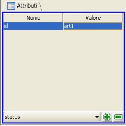

Gestione (inserimento, correzione) degli attributi degli elementi
NIR

Il pannello degli attributi consente l'inserimento e la cancellazione
guidata degli attributi degli elementi previsti dallo standard NIR.
Aggiunta di un attributo
- nella sezione “Struttura XML” a sinistra della
finestra principale di editing selezionare dalla struttura XML sotto forma
di albero del documento la partizione di testo o la metainformazione di cui
si desidera inserire un attributo;
- scegliere dal menù a tendina del pannello l'attributo
che si intende inserire;
- fare clic su "+" del pannello degli
attributi per aggiungere l'attributo;
- fare doppio clic nel campo Valore
dell'Attributo inserito;
- inserire o selezionare un nuovo valore
per l'attributo, secondo le modalità guidate di inserimento associate
a ciascuna tipologia di attributi.
Eliminazione di un attributo
- nella sezione “Struttura XML”
a sinistra della finestra principale di editing selezionare dalla struttura
XML sotto forma di albero del documento la partizione di testo o la metainformazione
di cui si desidera eliminare un attributo;
- selezionare l'attributo da eliminare;
- fare clic sul pulsante "-" del pannello
degli attributi (l'operazione avrà effetto solo se l'attributo
non è obbligatorio).